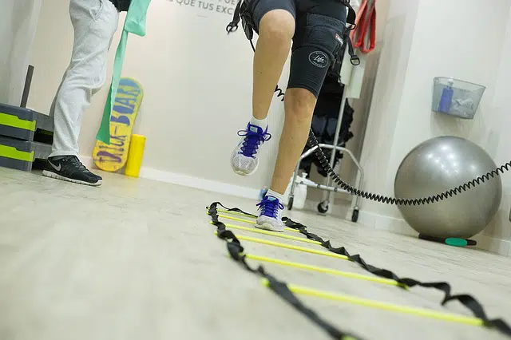

En nuestro centro primero realizamos el diagnóstico médico que se encarga de detectar cuál es la estructura lesionada.
Eso nos da las bases para luego poder realizar el diagnóstico kinésico, que en cambio, indaga sobre las causas que llevaron a la lesión de esa estructura.
Trabajamos bajo un abordaje interdisciplinario donde nuestros especialistas te acompañarán en tu recuperación, interviniendo de manera coordinada y evaluando tu proceso de rehabilitación.

La técnica consiste en la introducción de una aguja de acupuntura en la zona de dolor para luego aplicar una microcorriente con alto componente galvánico.
Se ha aplicado MEP en miles de casos para el tratamiento de tendinopatías, meniscopatías, sobrecargas musculares, dolor neuropático, dedo en resorte, atrapamientos piramidales, desgarros, fascitis plantar, esguinces, etc. Si bien los atletas de alto rendimiento son los que más necesitan de este tratamiento, también es factible de tratar con excelentes resultados a deportistas ocasionales y a todo tipo de pacientes, incluyendo los de la tercera edad.

Es una técnica invasiva utilizada en fisioterapia para eliminar puntos dolorosos musculares (o puntos gatillo), que se pueden generar debido a sobrecargas, movimientos bruscos, etc. Se llama punción seca porque no introducimos ningún anestésico ni sustancia.
Se utiliza una aguja similar a las agujas de acupuntura que es introduce en la piel hasta llegar a la zona en la que encontramos el punto que genera dolor. Con esta técnica buscamos estimular de forma mecánica el músculo afectado por estos puntos dolorosos.

Son técnicas que consisten en un amplio grupo de maniobras, en las que el kinesiólogo usa sus MANOS.
A través de ellas, que guían la terapia, se busca liberar todas aquellas restricciones y bloqueos que le quitaron movilidad al tejido.
Su aplicación, ayuda también a disminuir o eliminar la inflamación, modular el dolor, inducir a la relajación, mejorar la elasticidad facilitando así el movimiento y beneficiando la función.